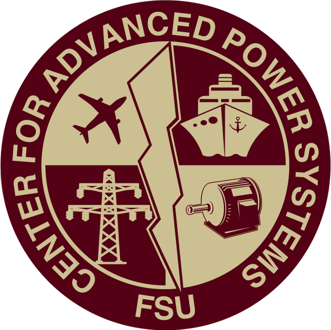

Bio.
Graduate student at with a Dual Bachelor Degree in Electrical Engineering and Computer Engineering pursuing a Ph.D. in Electrical Engineering.
Research Areas
- Demand Response and Energy Management Systems
- Machine Learning and Reinforcement Learning Algorithms for DER control
- Controller Hardware-in-the-Loop (CHIL)
- Integration of Distributed Energy Resources (DERs)
- Digital Real-Time Simulation (DRTS) - (OPAL-RT)
- Renewable Energy
- Power systems modeling and simulation
- Power grid and Smart Grid cybersecurity
Contact
Email: juanjoseoc1@gmail.com
Email 2: jjospina@fsu.edu
Ph.D. in Electrical Engineering
Florida State University
Sept 2016 - Expected Dec 2019
Bachelor's Degree in Electrical Engineering
Florida State University
Sept 2011 - May 2016
Bachelor's Degree in Computer Engineering
Florida State University
Sept 2011 - May 2016
Data Analysis & Forecasting for Bulk System Renewable Integration Student Engineer
Electric Power Research Institute (EPRI)
May 2019 - Aug 2019
- Developed tools designed to perform bulk short-term PV and load forecasting studies using Python, Keras, and Git (PVLF-EPRI tool).
- Developed tools to perform data analysis of distribution network-level energy data.
- Performed studies to evaluate the impact of distributed PV systems in utility-level load forecasting methods.
Graduate Research Assistant
Center for Advanced Power Systems
May 2016 - Present
- Developed machine learning and model predictive control (MPC) algorithms for energy and power management in microgrid environments using C/C++, Python, Tensorflow, Keras, Git, and Docker with the objective of optimizing energy consumption.
- Designed PV, energy storage, and microgrid models for hardware-in-the-loop (HIL) real-time simulation using tools such as OpenDSS, RT-LAB (Opal-RT), and MATLAB/Simulink, facilitating the test of control algorithms in real-time environments.
- Developed communication testbeds for testing controllers in real-time environments using industry communication protocol standards such as DNP3, C37.118, and IEC61850.

Industrial Assessment Center (IAC) Student Analyst
FAMU-FSU College of Engineering - Department of Energy (DOE) Project
Sept 2016 - Present
- Performed energy assessments to industrial and manufacturing companies with the objective of reducing energy costs.
- Used diagnostic tools and equipment to conduct energy, waste, and productivity evaluations.
- Prepared reports and presentations to companies with detailed analysis and recommendations to reduce their energy costs.
Computer Engineer Intern
ID Tech Logistics
May 2015 - Aug 2015
- Developed and designed security access control systems using Python and C; 20 % reduction in daily errors by improving authentication.
- Worked in the development of special tags using microcontrollers, designed for the protection and security of port workers, used on both staff and machinery.
- Performed maintenance of RFID systems.
Developing Optimal Control Technology for Distributed Energy Resources (DOCTdER)
CAPS, CISCOR & Nhu Energy, Inc. - DOE Sponsored Project
Jun 2016 - July 2018
- Development of a novel optimal control solution designed to solve the local and grid-connected distributed energy resources (DER) integration problem.
- The developed framework is capable of controlling multiple DERs based on forecasted values and real-time energy prices.
Home Energy Management System (HEMS)
Senior Design Project
Sept 2015 - May 2016
- Automates the power consumption of a client by controlling loads according to a real-time price.
- Web application implemented using PHP, Javascript, and HTML. Load controllers implemented using C/C++
- This project was awarded the "Best Environmental" Prize on the TI Innovation Challenge 2016
- M. U. Usman, J. Ospina, Md. O. Faruque "ANN-based Fault Location Identification in a Smart Distribution Network and Development of a Real-time Testbed using uPMUs and Smart Meters," Submitted to Journal.
- J. Ospina, N. Gupta, A. Newaz, M. Harper, M. Omar Faruque, E. G. Collins, R. Meeker, G. Lofman. "Sampling-Based Model Predictive Control of PV-Integrated Energy Storage System Considering Power Generation Forecast and Real-Time Price," IEEE Power and Energy Technology Systems Journal, 2019. doi: 10.1109/JPETS.2019.2935703
- M. U. Usman, J. Ospina, M. O. Faruque "Ensemble Voting Classifier for Distribution System Fault Location Identification using D-PMUs and Smart Meters," Submitted to Conference.
- J. Ospina, M. Harper, A. Newaz, M. Omar Faruque, E. G. Collins, R. Meeker, N. Ainsworth. "Optimal Energy Management of Microgrids using Sampling-Based Model Predictive Control Considering PV Generation Forecast and Real-time Pricing," Accepted to be published in PES 2019 GM Conference.
- A. Newaz, J. Ospina, M. O. Faruque. ”Coordinated Voltage Control in Distribution Systems with Distributed Generations,”Accepted to be published in PES 2019 GM Conference.
- J. Ospina, A. Newaz, M. O. Faruque. "Forecasting of PV Plant Output Using Hybrid Wavelet-Based LSTM-DNN Structure Model," IET Renewable Power Generation, 2019.
- M. U. Usman, J. Ospina, M. O. Faruque. "Fault Classification and Location Identification in a Smart Distribution Network Using ANN," 2018 IEEE Power Energy Society General Meeting (PESGM), Aug 2018, pp. 16.
- N. Gupta, G. Francis, J. Ospina, A. Newaz, E. G. Collins, O. Faruque, R. Meeker, M. Harper. "Cost Optimal Control of Microgrids Having Solar Power and Energy Storage," 2018 IEEE/PES Transmission and Distribution Conference and Exposition (T&D), Denver, CO, 2018, pp. 1-9.
- "Optimal Energy Management of Microgrids using Sampling-Based Model Predictive Control (SBMPC)", GEARED Poster Session - Distributech 2019, New Orleans, February 2019.
- "Optimal Control of PV-Integrated Energy Storage System using SBMPC", FAMU-FSU/CAPS-Georgia Tech. Joint Seminar, November 2018.
- "Cost Optimal Control of Microgrids Having Solar Power and Energy Storage", 2018 IEEE/PES Transmission and Distribution Conference and Exposition (T&D) - PES Poster Session, April 2018.
- "Forecasting of PV Plant Output Using Weather Data and Wavelet-Based Neural Network", FEEDER Seminar Series Fall 2017, October 2017.
- "Optimal Control of PV and Energy Storage Considering Current and Future Weather and Real-time Price of Energy", FAMU-FSU COE ECE Seminar, October 2017.
- "Smart Enterprise Energy Management System Under Real-time Pricing and Demand Response", GEARED Poster Session - Distributech 2017, San Diego, February 2017.
Programming Languages
- C/C++
- Python
- MATLAB
- Assembly
- HTML5
- JavaScript
- PHP
- VHDL
Software Tools
- Docker
- Git
- Tensorflow
- OpenDSS
- OpenDNP3
- OpenPDC
- MATLAB/Simulink
- RT-LAB (OPAL-RT)
- NI LabVIEW
- Modelsim Quartus
- Multisim
- System Advisor Model (SAM)
- OrCAD/Diptrace
- AutoCAD Electrical
- Databases: SQL, SQLite, MySQL
- Linux